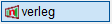

")
")
Alternativer Aufruf: Mittlere Maustaste auf eine Stablinie.
Biegeformen können mehrdimensional variabel erzeugt werden. Ein Bügel kann z. B. sowohl in der Breite als auch in der Höhe veränderlich verlegt werden. Jeder variablen Teillänge wird ein eigenes Polygon zugeordnet. Es besteht die Möglichkeit, je Biegeform bis zu zehn veränderliche Teillängen zu definieren. Am Auszug werden die jeweiligen Teillängen mit L1, L2 etc. gekennzeichnet. Die zugehörigen Einzellängen werden in der automatisch generierten Voutentabelle angegeben.
Beachten Sie, dass diese Funktion sich eher für kleine Flächen eignet und die maximale Stablänge bei dieser Funktion nicht berücksichtigt wird. Teilen Sie ggf. die Fläche in mehrere Teilflächen auf oder nutzen Sie die Flächenbewehrung.
Voraussetzung für die Verlegung
Der Auszugstext muss in einer der folgenden Formen vorliegen, um ihn auswählen zu können:
·… ? ø ? (…).
-Die Form ist nicht verlegt.
-Entspricht beim Erstellen der Biegeform der Option 1 = Verlegung nicht darstellen.
·0 ø Durchmesser (...), z. B. 0 ø 12.
-Die Form ist verlegt. Sie muss mit einem Verlegefaktor = 0 und nur einem Durchmesser verlegt sein.
-Entspricht beim Erstellen der Biegeform der Option 2 = Stückzahl jetzt eingeben (Verlegung mit [Abstand]), Option 3 = Stückzahl später eingeben oder [VeForm | verleg].
Grundeinstellungen
Die Grundeinstellungen für die Voutenverlegung wie Mindestlänge der Stäbe, Anzahl der Nachkommastellen oder die Positionierung der einzelnen Stäbe, können Sie vorab oder während der Voutenverlegung im Dialog Konfiguration Voute angeben.
1.Biegeform und Anzahl der Stäbe oder Stababstand wählen
Die Anzahl der Stäbe bzw. die Stababstände werden automatisch anhand des erforderlichen Stahlquerschnittes und des gewählten Stabdurchmessers ermittelt.
§Klicken Sie die Biegeform, den Auszug oder einen Teillängentext an. [Welche Form?].
Falls die Biegeform nicht akzeptiert wird, wurde sie vermutlich schon in einer anderen Verlegung verwendet. Legen Sie ggf. eine weitere Biegeform dieses Typs in Ihrer Konstruktionszeichnung an.
§Wählen Sie die gewünschte Berechnungsart oder übernehmen Sie die Werte aus einer vorhandenen Verlegung (Schaltflächen unter erf.As(cm²/m)):
|
Berechnet automatisch den Stababstand für den pro Meter erforderlichen Stahlquerschnitt (erf.as(cm²/m). Das Resultat kann sofort übernommen oder individuell angepasst werden. Der resultierende Stahlquerschnitt wird zum Vergleich angezeigt [vorh.As(cm²)]. Hinweis: Die Angabe des erforderlichen Stahlquerschnittes ist optional. Wird kein Wert oder 0 angegeben, muss der Abstand der Stäbe im Folgenden versuchsweise eingegeben werden, bis der resultierende Stahlquerschnitt [vorh.As(cm²)] den gewünschten Wert hat. |
|
Berechnet automatisch die für den erforderlichen Stahlquerschnitt (erf.As(cm²)) benötigte Mindestanzahl der Stäbe. Das Resultat kann sofort übernommen oder individuell angepasst werden. Der resultierende Stahlquerschnitt wird zum Vergleich angezeigt [vorh.As(cm²)]. Hinweis: Die Angabe von erf.As(cm²) ist optional. Wird kein Wert oder 0 angegeben, muss die Anzahl der Stäbe im Folgenden versuchsweise eingegeben werden, bis der resultierende Stahlquerschnitt [vorh.As(cm²)] den gewünschten Wert hat. An der Positionierung wird auch der nominelle Abstand angeschrieben. |
|
Übernahme des Durchmessers, Abstands bzw. der Anzahl aus einer vorhandenen Verlegung. [So wie welche Verlegung?]. Klicken Sie die Verlegung an, deren Werte Sie übernehmen möchten. Je nach Berechnungsart wird Abstand oder Anzahl aktiviert. Die Abfrage wechselt zu [KOR?] (s. weiter unten). |


§Geben Sie den erforderlichen Stahlquerschnitt unter erf.As(cm²/m) bzw. erf.As(cm²) ein und bestätigen Sie die Angabe.
§Wählen Sie in der Liste unter ø per Mausklick den Stabdurchmesser.
Wenn der erforderliche Stahlquerschnitt eingegeben wurde, berechnet ISBCAD automatisch den bestmöglichen Wert für den Abstand bzw. die Stabanzahl und schlägt diesen unter Abstand(>0) bzw. Anzahl(>=1) vor. Der resultierende Stahlquerschnitt wird unter vorh.As(cm²/m) angezeigt.
Weicht der an dieser Stelle angegebene Durchmesser von dem ursprünglich gewählten ab, können die Hakenlängen der Auszugsform nach dem Bestätigen des Verlegefaktors an den neuen Durchmesser angepasst werden. Sie erhalten in diesem Fall eine Meldung. Siehe: Hakenlängen an den Stabdurchmesser anpassen
§Wenn der resultierende Stahlquerschnitt vorh.As(cm²/m) größer/gleich dem erforderlichen Stahlquerschnitt erf.As(cm²/m) ist, können Sie den Wert für Abstand(>0) bzw. Anzahl(>=1) bestätigen.
Alternativ können Sie einen anderen Wert angeben (und bestätigen) und den resultierenden Stahlquerschnitt vorh.As(cm²/m) prüfen.
§Prüfen Sie, ob das Resultat Ihren Anforderungen entspricht.
Wollen Sie die Angaben ändern? [KOR].
|
Korrigieren Sie Ihre Angaben beginnend mit erf.As(cm²/m) (erforderlicher Stahlquerschnitt) oder verwenden Sie |
|
Der resultierende Stahlquerschnitt wird beibehalten. Sie können jetzt die veränderlichen Teillängen wählen und den Verlegebereichen zuordnen. |

 in der unteren Menüleiste.
in der unteren Menüleiste.
2.Teillängen definieren und verlegen
a)Veränderliche Teillängen wählen und den Verlegebereichen zuordnen Jede Teillänge einer Biegeform kann als veränderliche Teillänge gewählt und einem Verlegebereich zugeordnet werden. Nicht zugewiesene Teillängen behalten die in den Eigenschaften der zugrundeliegenden Biegeform definierte Länge bei. §Klicken Sie im Biegeform-Auszug eine veränderliche Teillänge an [veränderliche Teillänge(n)] und bestätigen Sie die Auswahl. –Die Reihenfolge bei der Auswahl der veränderlichen Teillänge spielt keine Rolle, wichtig ist die korrekte Zuordnung des Verlegebereiches. –Die Teillängen erhalten die Bezeichnung "L" (=Länge). §Um den Verlegebereich für die aktuell markierte, veränderliche Teillänge anzugeben, wählen Sie ein Polygon. [zugehöriges Polygon]. Hinweis: Unterschiedliche Maßstäbe. Falls die Kontur eines Polygons aus unterschiedlichen Maßstäben besteht, werden Sie nach dem Bestätigen des Polygons in einer Meldung darauf hingewiesen. Ihnen werden alle gefundenen Maßstäbe angezeigt, sodass Sie den korrekten Maßstab auswählen können. Wählen Sie aus der Dropdown-Liste den gewünschten Maßstab und bestätigen Sie mit OK. Achtung! Der im Dialog gewählte Maßstab wird nur für die Berechnung verwendet. Die ursprünglichen Maßstäbe der Elemente werden nicht geändert!
§Neigung des Polygons: In dieser Eingabe geben Sie einen Winkel an, um den die Stäbe im abgesteckten Bereich orthogonal zur Verlegerichtung geneigt werden. 0° oder keine Eingabe bedeutet keine Neigung. Eine Eingabe ungleich Null entspricht dem Winkel zwischen der XY-Ebene und der in die geneigte Ebene gerichteten Teillängen. Beachten Sie, dass hier die wahre Länge berechnet wird und sich in der Voutentabelle längere Teillängen ergeben als in der projizierten Darstellung auf der Zeichnung.
§Geben Sie unter Verlegerichtung den Winkel für die Anordnung der veränderlichen Teillänge zur Staffelrichtung an. 0 = senkrecht zur Staffelrichtung. Bei der Verlegung werden die Stäbe parallel angeordnet. Wenn Sie die folgende Meldung erhalten, müssen Sie in der Voutenkonfiguration den Wert für min. Stablänge ändern. Geben Sie einen Wert ein, der kleiner ist als die minimale variable Teillänge. Bestätigen Sie die Eingabe mit OK. Sie gelangen wieder zur Angabe der Verlegerichtung. §Fächer?
§Klicken Sie die Grundlinie bzw. den Bezugsbogen für die fächerförmige Verlegung an. [Grundlinie (-bogen)]. Die Grundlinie ist die Linie, auf der die Abstände abgesteckt werden sollen. Von diesen Punkten werden die Stäbe fächerförmig angeordnet. Die Winkel ergeben sich aus den benachbarten Linien, die nicht parallel verlaufen dürfen. Sollte die Verlegung nicht möglich sein, werden Sie durch eine Meldung darauf hingewiesen. Mit ←Bst können Sie einen Schritt zurückgehen und eine neue Grundlinie wählen.
Die verschiedenen Abstände zu den Kanten werden nacheinander abgefragt. Für jede Abfrage stehen folgende Optionen zur Verfügung:
§Geben Sie die Kantenabstände entsprechend der Abfrage an. Die aktuell abgefragte Kante ist in der Zeichnung markiert.
d)Abtreppung definieren Neben der Möglichkeit, die Bewehrungsstäbe kontinuierlich den Rändern anzupassen, können Sie Abstufungen vornehmen. Wenn Bereiche durch zwei schräge Kanten begrenzt werden, ist das Abtreppmaß die Summe der beiden Differenzen bzw. die Längenänderung der einzelnen Stäbe. §Wenn die Stäbe ohne Abtreppung verlegt werden sollen (jeder Stab hat eine andere Länge): Sie können unter Auswahl sofort angeben, ob eine weitere veränderliche Teillänge verlegt werden soll. Um eine Abtreppung zu definieren: §Wählen Sie unter Abtreppung die Art der Abtreppung:
§Geben Sie unter Abtreppung die gewünschte Differenz der Stablängen (= Abtreppung) in Metern ein und bestätigen Sie mit der Eingabetaste. e)Weitere veränderliche Teillängen verlegen? §Geben Sie unter Auswahl an, ob alle veränderlichen Teillängen verlegt wurden:
|
3.Positionierung
§Geben Sie den nötigen Verlegefaktor ein und bestätigen Sie die Angabe. [Verlegefaktor].
§Soll eine Tabelle hinzugefügt werden?
|
Die Voutenverlegung ist abgeschlossen. |
|||||||||||||||||||||||
|
Geben Sie die Anzahl der Spalten an und setzen Sie die Tabelle an der gewünschten Stelle ab, um die Voutenverlegung abzuschließen. Für die Angabe der Spaltenanzahl können Sie die Schaltflächen unterhalb der Abfrage verwenden. Bestätigen Sie abschließend mit OK oder Rechtsklick. Hinweis: Wenn der Faktor >1 ist oder Stäbe mit verschiedenen Anzahlen geschnitten werden müssen, wird in der Tabelle eine zusätzliche Spalte für die Anzahl (n) erzeugt.
|
|||||||||||||||||||||||
Sie können nach Abschluss der Voutenverlegung sofort eine weitere mehrdimensionale Voute verlegen. [Welche Form?].